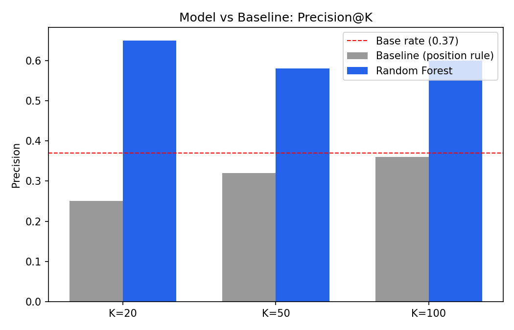
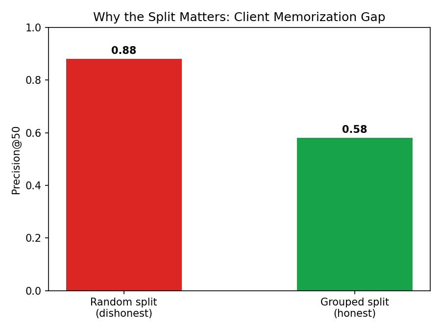
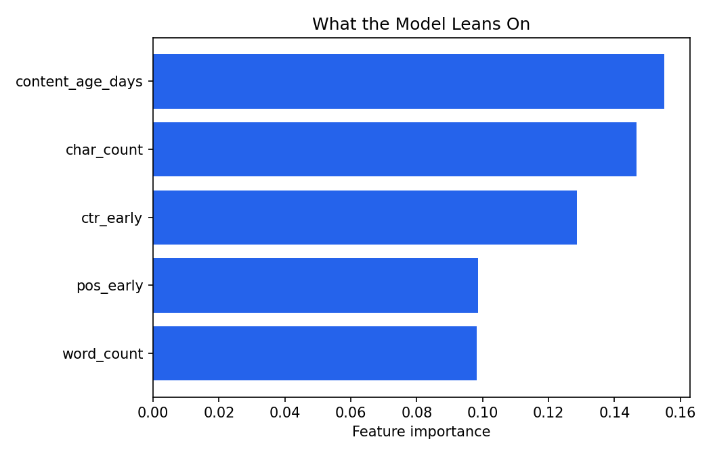

This study asks whether early-month search signals and static content attributes can identify which content pages are likely to be declining in search visibility, well enough to guide human review priorities. Using 92,548 content items from FlyRank's internship warehouse (March 2026, 55 clients), a transparent rule-based baseline and a Random Forest model were built, both trained on early-March signals only and validated against late-March outcomes. The Random Forest model, evaluated on a client-grouped train/test split, reached precision@20 of 0.650 versus the baseline's 0.250 on the same split — roughly 2.6× improvement — while a companion validation audit showed that measuring on a naive random split instead of a grouped one would have overstated this result by roughly 30 percentage points. The model's strongest signals were content age and content length rather than search behavior alone, with a documented survivorship bias in the age signal and a known blind spot on zero-click pages. The output is intended as a decision-support prioritization tool for human content reviewers, not an automated action system or a causal claim about what drives decline.
A content team managing a large portfolio cannot manually review every page every month. Somewhere in a set of tens of thousands of pages, some are quietly losing visibility while most stay stable — and the team has a limited review budget to find the ones that matter.
This is not a hypothetical problem. FlyRank's own March 2026 research paper identified content decay as one of its clearest portfolio-wide patterns — health scores dropping sharply after 270 days without a refresh — and named "refresh mature pages before they decay" as its top priority action. That paper's evidence is aggregate: it tells an editor that the portfolio decays on a predictable curve, not which of tens of thousands of individual pages need attention this month. This study builds the missing piece: a page-level tool that turns that portfolio-wide finding into an actionable, ranked, reason-coded queue an editor can actually work from.
Decision this supports: which pages a human reviewer should look at first, out of a large portfolio, when deciding where to spend limited refresh or editorial effort. This is a triage decision, not an automated content action system.
Unit of analysis: one content item (a page), scored at one point in time (early March 2026). Output: a ranked risk score per item, an action tier, and a reason code explaining why it was flagged. Cost of a wrong call: a false positive wastes reviewer time on a page that was actually stable; a false negative means a genuinely declining page goes unreviewed until a later cycle. Given that asymmetry, the ranked queue is deliberately capped at a small, high-precision top tier rather than flagging broadly.
Release: the FlyRank internship warehouse, hosted on Hugging Face
(hf://datasets/FlyRank/internship-warehouse).
Tables used:
fact_content_daily_performance, March 2026 partition only — 9.84M rows, 55
clients, 331K content items, all report dates confirmed in March 2026.dim_content — static content attributes: type, word/character count,
backlinks, search volume, competition, primary intent, category count, creation date.Date windows: early-March (days 1–15) builds the features; late-March (days 16–31) defines the outcome label. Every feature strictly precedes the outcome window.
Excluded, and why:
fact_content_daily_performance_sample — the sealed final month (June 2026),
held out and never touched for label logic.fact_content_query_90d — its true window covers April–June 2026 only. It does
not reach back to March at all, so it cannot honestly inform a March-based label.trend_direction / trend_pct — excluded entirely to avoid
circularity with the label they would otherwise help define.client_hash_id /
content_hash_id identifiers appear anywhere in this work.Final feature table: 92,548 content items, combining early-March behavioral signals with static content attributes and the March outcome label.
is_declining — impressions dropped from early-March to late-March within the same
content item, computed strictly from within-window observed data.
Early-March signals (imp_early, clk_early, pos_early,
ctr_early) plus static content attributes (content_age_days as of
March 1, word/character count, backlinks, search volume, competition, primary intent, content
type, category count). Roughly 30% of items were missing word/character counts and 39% were
missing backlinks — these were imputed with the column median and flagged with a separate
"missing" indicator, rather than silently filled with zero.
A single-condition, human-readable rule: pages in the worst 20% of early-March search position are flagged for review. Two candidate signals — impression volume and position — were audited independently first, with bucketed verdict tables, before this rule was built. Both came back MIXED (weak, non-monotonic effects on their own) — an honest finding in itself about how little any single early signal explains here.
Logistic Regression first, then a Random Forest (200 trees, max depth 8, balanced class weight) — the standard "readable first, then stronger" progression for a yes/no prediction on an observed label.
A grouped train/test split by client_hash_id (80/20, seed 42), with zero client
overlap confirmed between train and test. This was directly tested against a naive random
row-level split on the identical data and model: the random split scored dramatically higher
at every rank threshold (precision@50 of 0.88 versus 0.58 for the grouped split) —
demonstrating that a random split would have let the model partly "recognize" clients rather
than learn a signal that generalizes to a page it has never seen.
Confirmed the feature set contains no label-derived columns (imp_late,
is_declining, trend_direction, trend_pct) and that
every feature is computed strictly before the outcome window. As a positive control,
imp_late was deliberately added as a feature: precision@20 jumped from an honest
0.650 to a suspicious 1.000, with that single feature dominating importance — confirming the
leakage-detection method itself catches an obvious violation when one is present.
Precision@K (K=20, 50, 100), with the base rate reported alongside every number. For a "which pages first" ranking problem, precision at the top of the queue is the metric that matters — not flat accuracy or recall.
On the same client-grouped test split, same seed, same metric, the model clearly outperforms the baseline near the top of the ranked queue — where it matters most for a limited review budget.
| K | Base rate | Baseline (position rule) | Random Forest |
|---|---|---|---|
| 20 | 0.370 | 0.250 | 0.650 |
| 50 | 0.370 | 0.320 | 0.580 |
| 100 | 0.370 | 0.360 | 0.600 |



Investigating content_age_days further revealed an inverted-U relationship with
decline rate: risk peaks around 82–130 days old, then falls for older content. The most
plausible explanation is survivorship bias — very old pages still present in this snapshot
already proved durable, since fragile old pages were likely pruned or merged before the data
was captured. This was checked against a simpler explanation (a bulk-import batch artifact)
and ruled out: page counts were smoothly distributed across age bins, not spiked at one point.
Every claim in this paper should be read as "these pages look worth reviewing first, because…" — never as "this page will decline" or "refreshing this page will fix it." This is an observational study; no causal or forward-looking guarantee is being made.
Output from scoring the full 92,548-item dataset with the final model:
Top-ranked; matches the measured precision@20 of 0.650.
Ranks 21–100; precision degrades toward the base rate here.
Below any measured precision band — score alone should not drive action.
Each item carries a reason code (AGE_RISK_WINDOW, ZERO_CLICKS,
WEAK_POSITION, THIN_CONTENT, or LOW_SIGNAL) so a
reviewer sees why a page was flagged, not just that it was.
This queue narrows attention — it does not execute decisions. Items flagged
ZERO_CLICKS need particular scrutiny given the documented blind spot above. No
automated content edits, deletions, or client-facing claims should be generated from this queue
directly.
Monitoring: realized precision@20 should be tracked monthly against the 0.650 baseline. A sustained drop, a shift in the base decline rate, or a major change in portfolio composition are all retrain triggers.
Every step in this study is a notebook in the linked repository, runnable from a fresh clone with the fixed seed noted below.
Random seed: 42, fixed throughout. Full repository: github.com/MuhammadBilalFarooq/Assignment1.